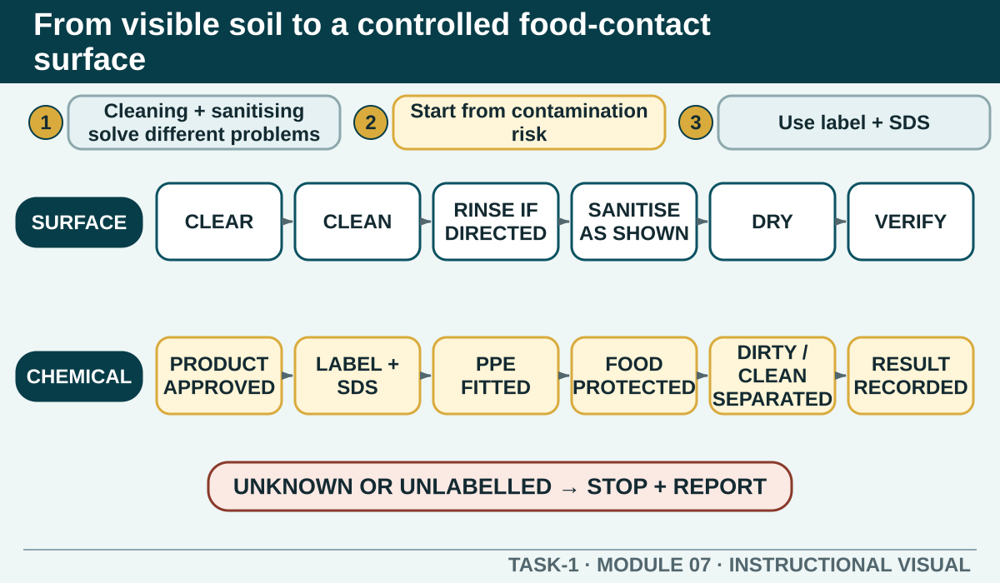

Prior learning
Recall the previous lesson and bring forward one question or completed learning artefact.
Task 1 · Lesson 7 of 16
Distinguish cleaning from sanitising, follow the authorised sequence and use chemical information without guessing dilution, contact time or compatibility.
Prior learning
Recall the previous lesson and bring forward one question or completed learning artefact.
Success criteria
Learning boundary
This lesson supports preparation and formative practice. The current authorised package and trainer/assessor control formal products, observations, dates and submission.

Cleaning removes food residue, grease and visible soil from a surface or item. Sanitising follows effective cleaning and reduces microorganisms to a safer level using the authorised method. A surface can look clean without being sanitised, while sanitiser cannot work effectively through heavy residue.
The required sequence depends on the item, product and workplace procedure. As a general thinking pattern, clear the area, remove soil, wash, rinse if directed, sanitise as directed and allow the approved drying method. The label, Safety Data Sheet and authorised procedure control the exact instructions.
Before choosing a method, identify what is being cleaned, what soiled it and whether it touches food. A knife, chopping board, floor, rubbish area and electrical appliance cannot automatically receive the same method. Consider material, dismantling, safe access, water and electrical risk, and the need to protect nearby food.
Move or cover food as directed before cleaning begins. Use separate equipment for incompatible areas and prevent dirty water, cloths, hands or spray from carrying contamination back onto cleaned food-contact surfaces.
Use only the approved chemical in its labelled container. The product label explains intended use and operating directions; the Safety Data Sheet provides hazard, handling, storage, exposure and emergency information. Check both whenever the task, product or risk is unfamiliar.
Never guess dilution or contact time, transfer product into an unlabelled food container, or mix chemicals unless the manufacturer explicitly directs it. A missing label, leak, unknown product or conflicting instruction is a stop-and-report problem.
Organise the sequence so dirty items do not cross back over cleaned items. Remove waste and loose soil, process equipment in the authorised order, keep clean and dirty tools separated and change cloths or solutions as directed. Hands and gloves may also need to be reset when moving between stages.
Air drying is often preferred where directed because a reused cloth can recontaminate a sanitised surface. Do not assume this applies to every item; follow the approved procedure for the equipment and product.
A cleaning schedule identifies what must be cleaned, when, by whom, using which approved method and how completion is checked. Some actions occur between tasks, some after contamination and others at closing or another planned interval.
Signing a schedule without doing the work creates false evidence and leaves the next worker exposed. Complete the task, inspect the result, report anything that could not be completed and record the real status. Verification may include visual inspection and any additional authorised check.
If a product contacts a person, food or an unintended surface, stop the affected work and follow the label, SDS and authorised incident procedure. Protect others, report promptly and use first aid or emergency support as directed. Do not delay reporting while attempting an improvised clean-up.
After any incident, consider why the control failed: storage, labelling, training, PPE, equipment, workflow or communication. Correcting the immediate spill matters, but preventing a repeat is part of the cleaning and WHS system.

External media loads only after you choose it.
Source-linked video
Watch for: Distinguish removal of soil from the sanitising stage, and note where the product label, food-contact status and verification affect the sequence.
Formative practice
Each option explains the workplace consequence. These responses save on this device.
Written application
Use observable facts, explain the consequence and keep local assessment or procedure details with the authorised source.
Self-checkApply and keep evidence
Distinguish soil removal, microorganism reduction and unsafe chemical shortcuts.
Use the check result, activity record and written response as formative learning evidence only. Formal evidence remains controlled by the current package and trainer/assessor.
Next: Tools and equipment.
Authorised source note: Source basis: authorised Cycle 1 cleaning, chemicals and SDS content, supported by the signed TAS and current regulator principles. Exact products, dilution, contact time, rinse directions and local cleaning schedules remain Teacher to confirm.